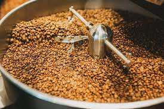

Roasting coffee transforms the chemical and physical
properties of green coffee beans into roasted coffee
products. The roasting process is what produces the
characteristic flavor of coffee by causing the green
coffee beans to change in taste. Unroasted beans contain
similar if not higher levels of acids, protein, sugars,
and caffeine as those that have been roasted, but lack the
taste of roasted coffee beans due to the Maillard and other
chemical reactions that occur during roasting.